on
IBM Cloud Foundry 로 node js 간단 배포하기
webRTC 프로젝트 시작하기 전, node js로 간단한 webrtc 프로그램을 만들고 ibm cloud foundry로 배포해봤습니다. cli로 뚝딱 되어버려 너무 신기해요.🤔
📌 Table of Contents
서론
이 글은 간단한 WebRTC Web App을 IBM Cloud Foundry를 사용하여 배포해보고자 한다. 생각보다 매우 간단!
그리고 WebRTC Web App은 기존에 있는 오픈소스를 활용하겠다.
로컬 컴퓨터에서 테스트하면 아래처럼 동작한다.
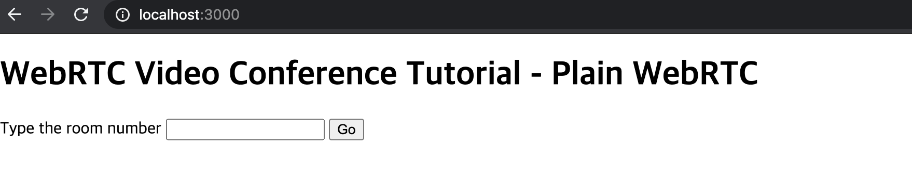
Room Number를 써서 화상 채팅방 만들면 된다. 나는 1을 넣어보겠다.
숫자 넣고 Go하면 내 화면이 뜬다. 짜잔! 방을 만든 썬구리 얼굴이 뜬다.
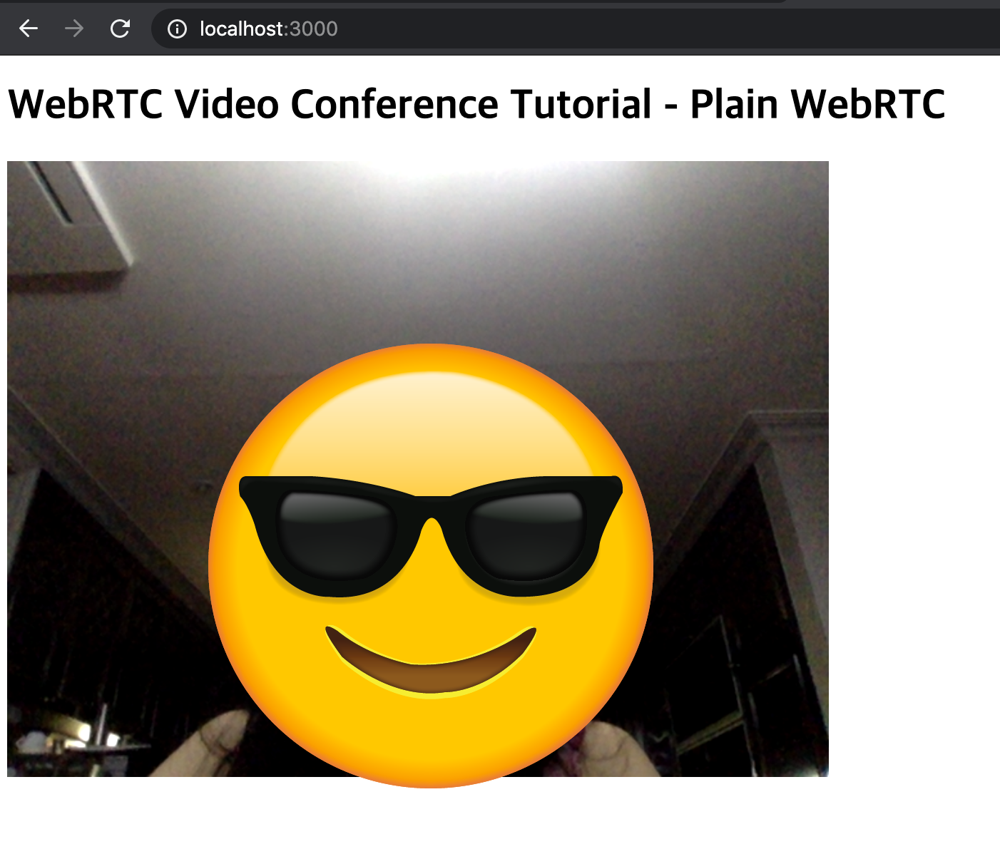
그리고 내가 여기서 다시 localhost:3000을 들어가서 내가 입력했던 채팅방 room number 1로 들어가면, 이제 화상 채팅이 가능해진다.
요렇게!
썬구리와 윙키가 이제 화상채팅에 성공한 것.
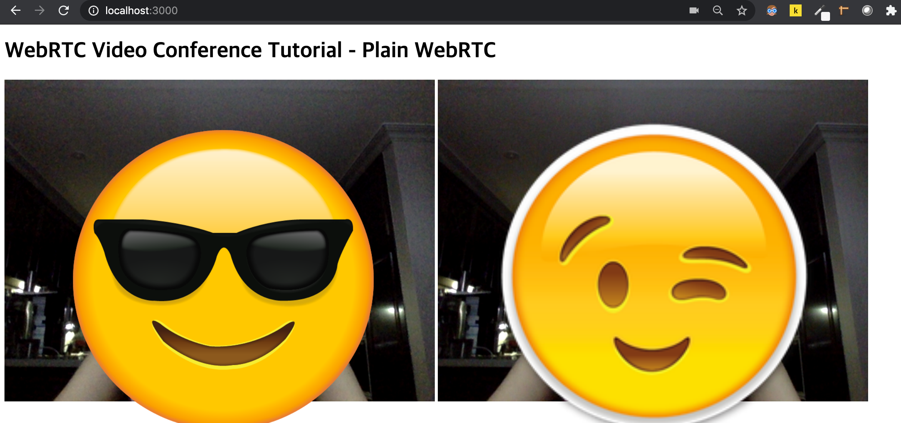
사실은 이게 중요한게 아니라 오늘의 글은 이 간단한 프로그램을 IBM Cloud Foundry를 사용하여 손쉽게 배포해보도록 하는 것이다.
IBM Cloud Foundry란?
IBM Cloud Foundry는 클라우드 네이티브 앱을 쉽고 빠르며 안정되게 배치할 수 있는 PaaS(Platform-as-a-Service)이다. Cloud Foundry를 사용하면 코딩의 빌드 및 배치 요소가 연결된 서비스에 맞게 계속 신중하게 조정되므로, 애플리케이션을 빠르고 일관되며 안정되게 반복할 수 있다.
IBM Cloud Foundry 로 배포
그럼 IBM Cloud Foundry 로 내가 만든 node js 서버를 간단하게 배포해보고자 한다. 따끈따끈하게 새로 진행했으므로 아래 내용을 따라하면 바로 될 것이다. (IBM Cloud에서 lite계정을 사용하면 무료이므로 비용은 걱정하지 않아도 된다.)
자, 일단 IBM Cloud 대시보드에서 Node JS 리소스를 만든다.
- 리소스 작성 > Cloud Foundry 앱 > Node js 선택
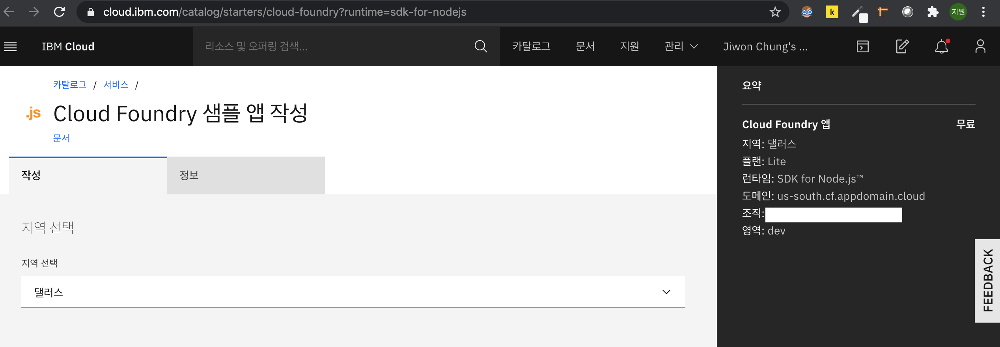
- 이름 대충 정해서 만들면, 실행 중으로 변하면서 뭔가 시작하는 느낌이 든다. 내 대시보드에 가도 내가 만든 앱이 실행 중인 걸 알 수 있다.
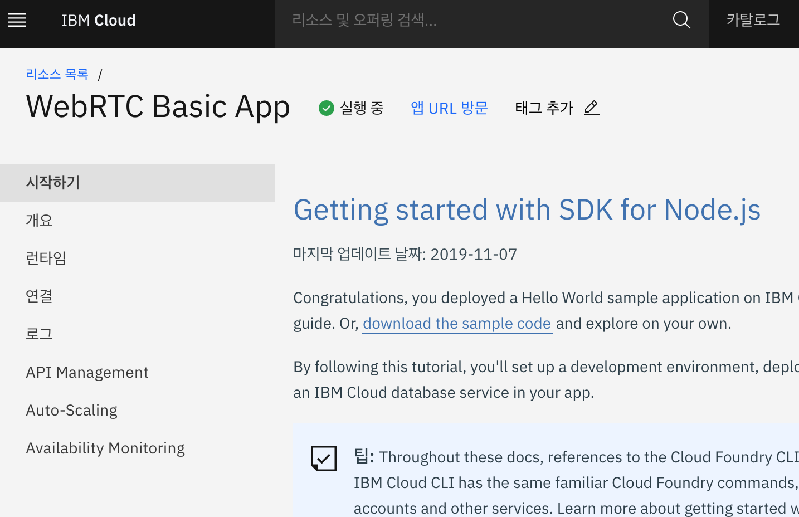
- Cloud Foundry 앱을 사용하기 위해서는 앱의 root 경로에 manifest.yml파일을 만들어 설정해줘야 한다. 아래처럼 하면 되겠다.
# manifest.yml
applications:
- name: WebRTC Basic App
random-route: true
memory: 64M
package.json에는 실행할 명령어를 적는다.
# ...
"scripts": {
"start": "node server.js"
}
# ...
-
이제 배포하자
Cloud Foundry cli를 사용해야 하기 때문에 IBM Cloud CLI를 설치한다. 이미 내 맥에는 깔아버렸기 때문에 자세한 설명은 공식홈페이지를 참고하세요.
ibmcloud login을 CLI로 입력하고, 로그인하면 된다. 지역은 아까 생성한 리소스와 일치시킨다. 나는 댈러스로 선택했으므로 us-south 선택
ibmcloud login
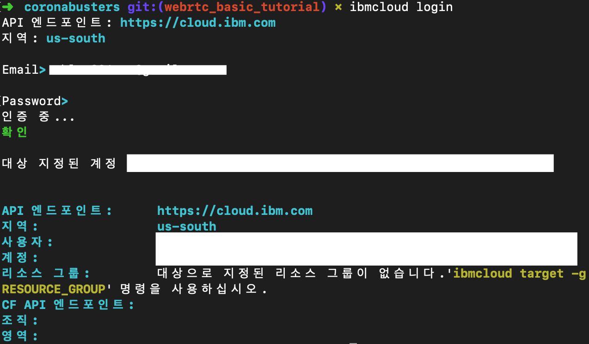
ibmcloud target –cf로 해당 directory와 클라우드를 연결하고, ibmcloud cf push로 리소스를 클라우드에 입력시킨다.
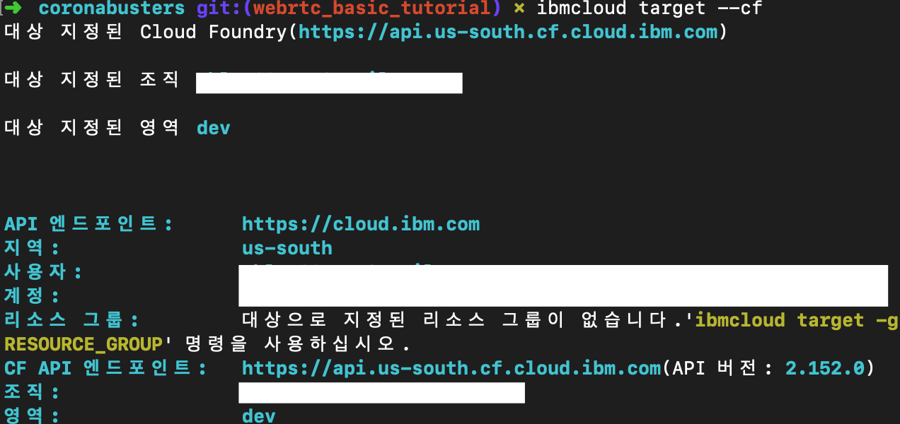
😅 ibmcloud cf push는 생각보다 오래걸리므로 좀 기다립시다.
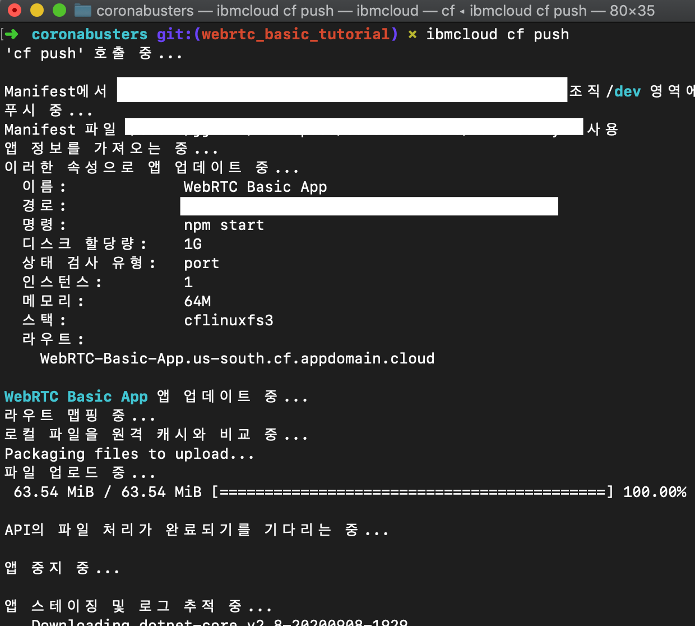
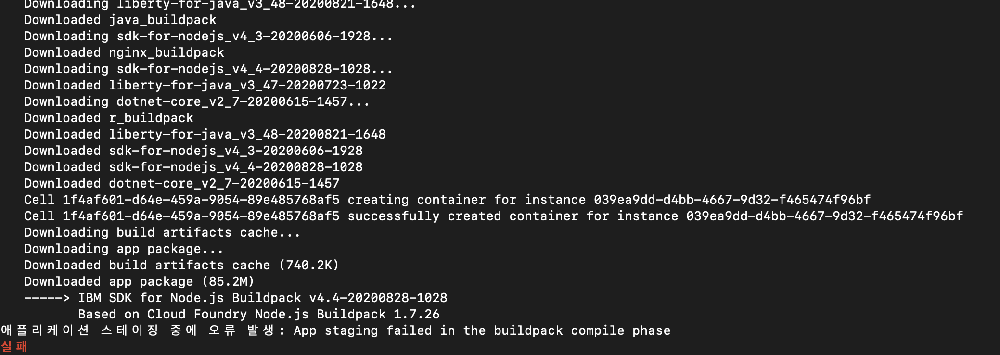
아.. 이런.. package.json에 오류가 있어서 실패했네. 로컬에 그래도 한번 돌려보고 push해야하는데.. 😤 어쨌든 오류 수정하고, 다시 ibmcloud cf push하면 된다.
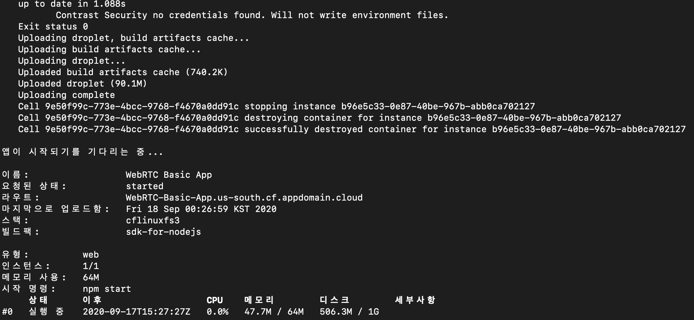
오우 성공! 이제 그럼 ibm cloud 대시보드를 확인해볼까?
- 배포한 앱을 실행해보자
다시 내 리소스를 들어가서 앱URL방문을 클릭해본다.
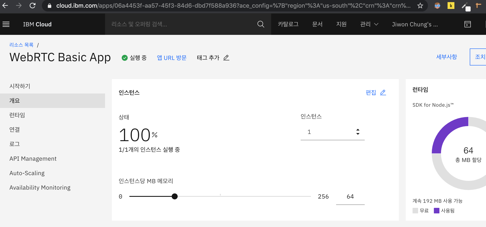
로컬 컴퓨터에서 돌렸던 것과 똑같이 뜬다! 성공!

화상 채팅까지 성공하는 지 확인해봅시다.
1번 방을 만들고, 입장
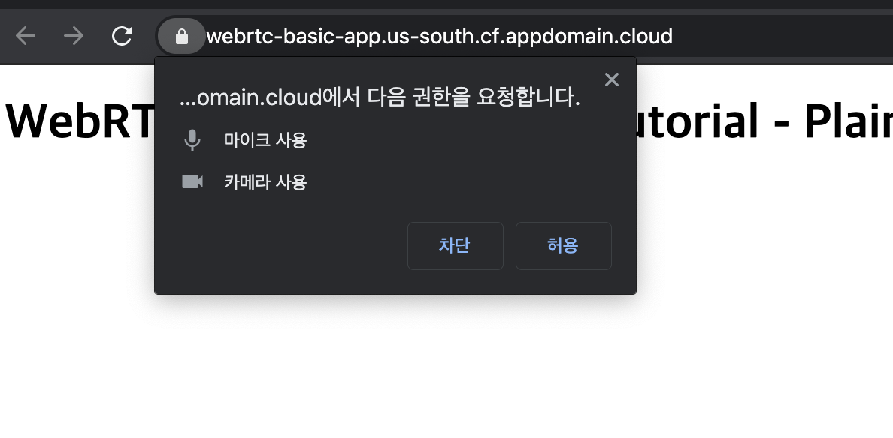
다시 썬구리가 등장한 것을 볼 수 있다.
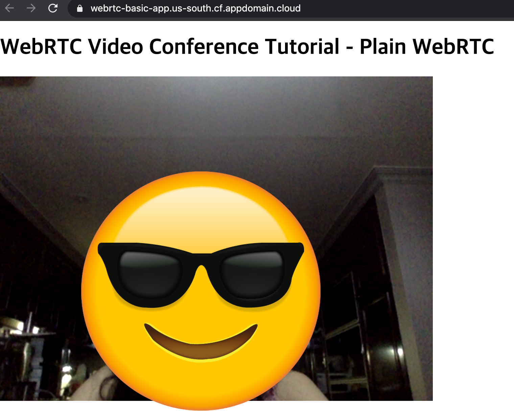
그럼 다시 1번방을 들어가서 화상 채팅 기능을 테스트해보자.
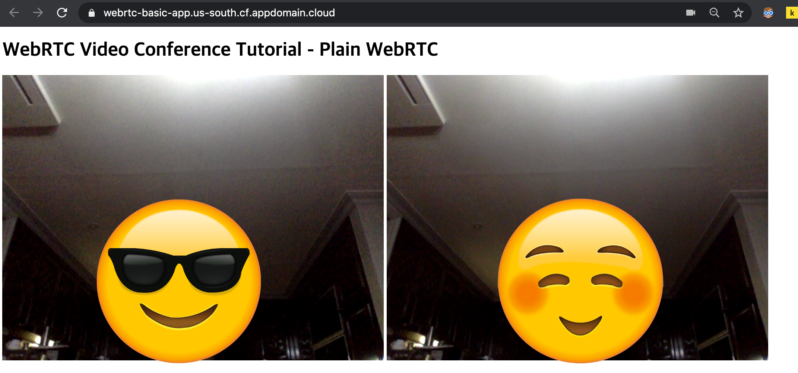
로컬에서 테스트했을 때와 동일하게 동작하는 것을 확인할 수 있다.
🚦 이제 내 로컬 컴퓨터에서 기능 수정하고, 버그 수정하고, 테스트한 다음 ibmcloud cf push만 하면 배포가 가능하다.
refrerence
- https://lovemewithoutall.github.io/it/deploy-on-ibm-cloud/